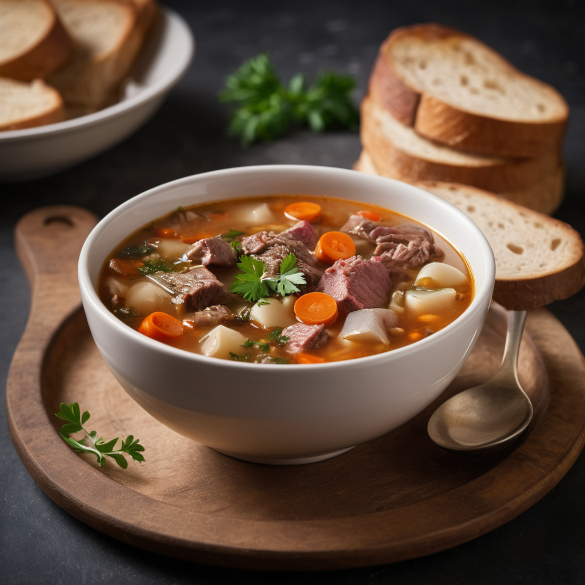

Hozzávalók:
- 500 g marhahús ,pl. csontos marhacomb vagy marhafelsál
- 2 ek olaj vagy zsír
- 1 közepes vöröshagyma, felkockázva
- 2 sárgarépa, felkarikázva
- 2 zellergumó, felkarikázva
- 1 kisebb zeller zöldjével együtt, felkarikázva
- 1 babérlevél
- 6-8 csésze zöldség vahu csirkehús alaplé
- Friss petrezselyem vagy snidling apróra vágva a tálaláshoz
- só
- bors
Elkészítés:
- Mossuk meg alaposan a marhahúst, majd vágjuk kisebb darabokra.
- Egy nagy lábasban hevítsünk fel olajat vagy zsírt közepes lángon.
- Adjuk hozzá a felkockázott vöröshagymát, és pirítsuk meg, amíg aranybarna lesz.
- Ha kész, tegyük a lábasba a húsdarabokat, és pirítsuk meg minden oldalukon, amíg szép barna színt kapnak.
- Adjuk hozzá a felkarikázott sárgarépát, zellert és zellerzöldet, valamint a babérlevelet. Keverjük össze, és pirítsuk együtt a hússal néhány percig.
- Öntsük fel a húst és a zöldségeket vízzel vagy hús alaplével. Ha használunk hús alaplevet, figyeljünk a sózásra, mert az alaplé már sós lehet.
- Forraljuk fel a levest, majd csökkentsük a hőt, és főzzük lassú tűzön kb. 1,5-2 órán át, vagy amíg a hús és a zöldségek teljesen megpuhulnak.
- Ízlés szerint sózzuk és borsozzuk.
- Tálalás előtt szórjuk meg friss apróra vágott petrezselyemmel, ha szeretnénk.
- Tálaljuk melegen, és kísérhetjük friss kenyérrel vagy zsemlekockákkal.